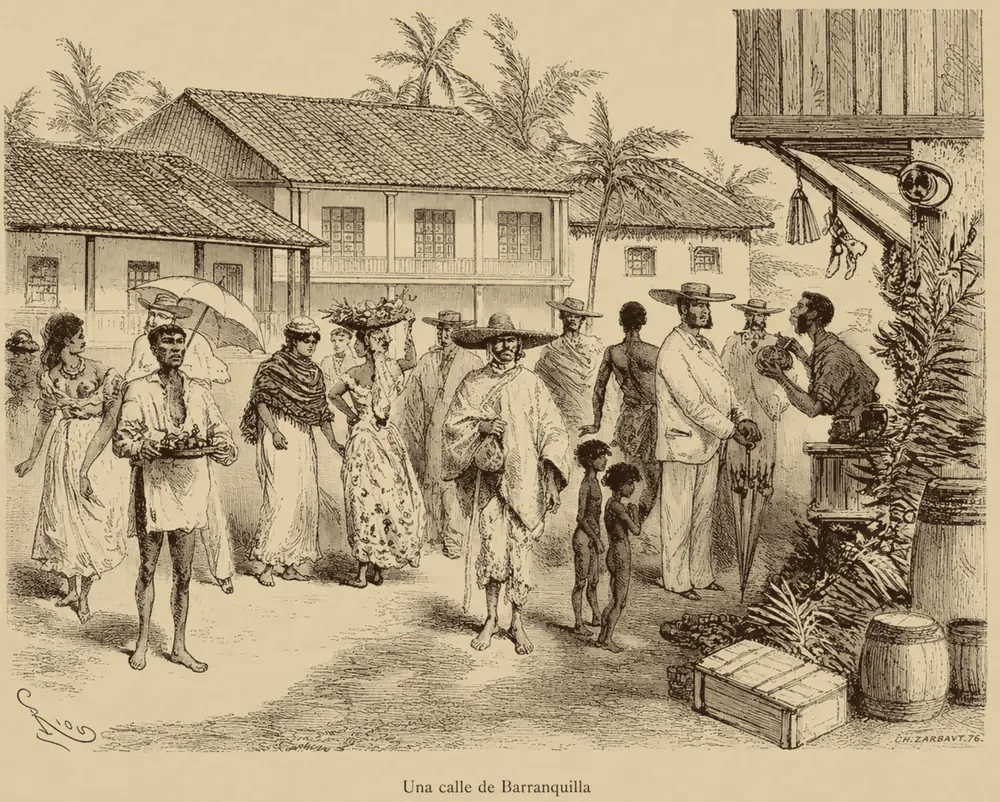

· Edición 4 · 5 min de lectura
En Colombia el calor enferma y mata, pero casi nunca se cuenta
Revisada el · 1 corrección posteriores a la publicación

En Colombia el calor enferma y mata, pero casi nunca se cuenta
En pocas palabras. La costa Caribe está en alerta roja por calor. El calor enferma y puede matar, pero en Colombia casi nunca se cuenta como causa de muerte. Otros países tienen planes de alerta que salvan vidas.
Qué pasó. El Ideam declaró alerta roja en la costa Caribe: la sensación térmica pasó de 55 °C.
En Barranquilla y Cartagena hay hasta 25% más consultas médicas, sobre todo de adultos mayores y niños.
¿Por qué pasa?
- La alerta es del clima, no de la salud. No les dice a los hospitales qué hacer.
- Lo que no se cuenta no se prioriza. Un estudio citado esta semana le atribuye al calor 322.750 muertes en Colombia entre 1998 y 2013; en los registros solo aparecen 957. (Una sola fuente; no verificado.)
¿Alguien lo ha resuelto? Hay planes que funcionan como un semáforo: cuando el calor llega al punto en que suben las muertes, se prende una alerta y los hospitales saben qué hacer.
Ahmedabad, en India, hizo el suyo tras la ola de calor de 2010. Se estima que evita unas 1.190 muertes al año. Francia hizo el suyo después de 2003:
Pero ojo. De 11 evaluaciones en el mundo, solo una muestra que un plan redujo las muertes en general.
Y casi todos miden la temperatura, no la humedad. Con mucha humedad, sudar ya no enfría. En Ahmedabad el calor es seco; en Barranquilla, no.
Ya pasó antes. Los planes llegan después de muchas muertes. (Conocimiento general: Chicago, tras 1995.) Colombia todavía no las cuenta.
Las tropas recuperan las calles, pero no frenan la extorsión
En pocas palabras. Un grupo armado paralizó Santa Marta y el Gobierno mandó soldados. Pero el poder del grupo viene de la extorsión, y eso no se quita solo con tropas. En Palermo, los comerciantes se unieron para dejar de pagar.
Qué pasó. El 21 de septiembre murió en un operativo alias Cholo, segundo al mando de las Autodefensas Conquistadoras de la Sierra Nevada. El grupo respondió con un paro armado en Santa Marta.
El 22, el presidente Abelardo de la Espriella ordenó militarizar la ciudad con 1.100 uniformados.
¿Por qué pasa? Cada comerciante hace la cuenta solo: pagar la "cuota" le sale más barato que denunciar.
- Es su negocio principal. Le deja al grupo entre 6.000 y 7.000 millones de pesos al mes, según expertos consultados por la prensa.
- Va en aumento. En los primeros tres meses de 2026 se denunciaron 2.914 extorsiones, la cifra más alta en diez años.
¿Alguien lo ha resuelto? En Palermo, Sicilia, cerca de 8 de cada 10 pequeños negocios pagaban el pizzo a la mafia. En 2004, siete jóvenes llenaron la ciudad de carteles contra ese pago, y así nació Addiopizzo.
Hoy su lista pública de negocios que no pagan pasa de 1.000, con clientes que les compran a ellos y apoyo legal a quien denuncia.
Pero ojo. Según un estudio en la revista Modern Italy, los clientes comprometidos parecen haberse estancado. (Conocimiento general: Addiopizzo creció cuando la Cosa Nostra ya estaba debilitada tras los asesinatos de Falcone y Borsellino en 1992.)
Ya pasó antes. Un estudio de 2025 encontró que la extorsión sube en los seis meses siguientes a la caída de un líder. En Santa Marta, la crisis empezó justo así.
No hay vacuna contra este ébola porque no había compradores
En pocas palabras. En el Congo hay un brote grande de ébola Bundibugyo, un tipo sin vacuna aprobada. Nadie la fabricó porque no había quién la comprara. Ahora hay plata para desarrollarla y para asegurar que alguien la compre.
Qué pasó. El brote, declarado el 15 de mayo, suma 7.773 casos confirmados y 3.759 muertes. Es el brote de ébola que más rápido ha crecido del que se tenga registro.
¿Por qué pasa?
- La vacuna que existe, Ervebo, es para otra variante: la Zaire.
- No hay comprador seguro. Los brotes son raros y ocurren en países pobres.
- Se empezó tarde. Las primeras pruebas en personas arrancaron con el brote ya en marcha.
¿Alguien lo ha resuelto? Sí, cuando alguien pone la plata antes. En Guinea, un ensayo publicado en 2017 probó la vacuna contra Zaire:
Fuente: The Lancet
Ver datos
| casos | |
|---|---|
| Vacunación inmediata | 0 |
| Vacunación diferida | 16 |
Para Bundibugyo, CEPI pone más de 60 millones de dólares en posibles vacunas, y Gavi compromete hasta 50 millones para acelerar el acceso.
Pero ojo. Comprar por adelantado puede salir caro: según Médicos Sin Fronteras, Pfizer y GSK recibieron 1.200 millones de dólares por la vacuna del neumococo. Y el resultado de Guinea fue cuestionado en The Lancet por posibles fallas de diseño.
Seguimiento: presupuesto 2027
En pocas palabras. El presupuesto de 2027 pasó su primera votación, por 634,9 billones de pesos. Por cada peso para construir algo nuevo, reserva casi dos para pagar lo que ya gastó. Las plenarias empiezan el 1 de octubre.
Qué pasó. Se mantuvo el recorte de 170.000 millones de pesos a la JEP. El magistrado Raúl Sánchez dijo que la dejaría "sometida a la quiebra".
Asombro
Un gato salvaje criado como doméstico. Cerca de La Paz, Bolivia, un hombre llevó a un centro de rescate un "gatito" que cazaba gallinas y maullaba distinto. El ADN confirmó una especie nueva, Leopardus tilcayo: según los investigadores, la primera de felino salvaje en cerca de un siglo.
El pingüino papúa eran cuatro especies. Lo mostró el ADN de 64 pingüinos. Tres de las cuatro están en riesgo.
Patrón. Lo que no se mide bien parece una sola cosa.
La paradoja del día
Lo más absurdo de la edición, en dos líneas
La primera especie nueva de felino salvaje en cerca de un siglo no apareció en una expedición a los bosques de niebla de Bolivia. Llegó a un centro de rescate como gatito de casa.
Para conversar
La pregunta. El calor, la extorsión y el ébola se atienden cuando ya hay muertes. ¿Qué haría falta para prepararse antes, cuando todavía nadie lo está pidiendo?
Qué puede hacer usted. En días de calor extremo, pregunte por los vecinos mayores que viven solos. Están entre los más afectados.
¿Le interesa ver las fuentes?
Todos los documentos y datos que usamos
68 fuentes: 20 académicas, 6 oficiales, 9 de organizaciones, 32 de prensa, 1 de referencia.
- Prensa El Tiempo. El Niño pone al rojo vivo al Caribe
- Prensa La Patria. Alerta roja por ola de calor
- Prensa Infobae / EFE. El Niño dispara los termómetros
- Prensa La República (Perú). Calor de hasta 40 °C
- Prensa ConsultorSalud. Calor extremo y mortalidad en Colombia
- Prensa IPS. El calor aumenta la mortalidad de trabajadores
- Académica Biomédica. Sistema de alerta temprana por calor en Colombia
- Académica PLOS One. Muertes en exceso en Ahmedabad, 2010
- Académica PMC. Evaluación del plan de calor de Ahmedabad
- Oficial PreventionWeb. Nueva evidencia del plan de Ahmedabad
- Académica PubMed. Techos fríos en Ahmedabad
- Académica Int. J. Epidemiology. Francia, ola de calor de 2006
- Académica PMC. Mortalidad en nueve ciudades francesas, 2006
- Prensa La Nación. Corredores verdes de Medellín
- Prensa tiempo.com. Medellín y los corredores verdes
- Organización CPR. Evaluación de planes de calor de India
- Prensa The Print. Planes de calor sin fondos ni contexto local
- Académica PMC. Evaluaciones de planes de calor y retos metodológicos
- Prensa Infobae. Militarizar no desmonta el dominio territorial
- Prensa Infobae. Choque político por la militarización
- Prensa El Espectador. Nueve capturados y 1.100 uniformados
- Prensa Local10 / AFP. Ciudad militarizada y comercios cerrados
- Prensa Cambio. De la Espriella ordena militarizar
- Prensa El Tiempo. Cómo las ACSN paralizaron la ciudad
- Prensa El Tiempo. De Hernán Giraldo a Cholo
- Prensa La FM. Cifra récord de extorsiones
- Prensa El Tiempo. Subregistro de extorsión en Barranquilla
- Académica IESE. Lecciones de Addiopizzo
- Académica IESE. El movimiento antimafia
- Referencia Wikipedia. Addiopizzo
- Académica Modern Italy. Barreras del consumo crítico
- Organización Addiopizzo. Hoy muchos pagan por conveniencia
- Organización Addiopizzo. Una ley que haga desfavorable la connivencia
- Académica Journal of Conflict Resolution. Descabezamiento y violencia en México
- Académica Criminology & Criminal Justice. Kingpin, extorsión y secuestro
- Oficial OMS. Parte del brote, DON617
- Oficial UN News. Más de 3.700 muertes
- Oficial UN News. La respuesta debe ir más rápido que el ébola
- Prensa Rio Times. Financiación de EE. UU. llega a 887 millones
- Prensa Infobae. El brote llega a una séptima provincia
- Prensa Infobae / EFE. Muyembe, tres o cuatro meses
- Prensa Oxford. Primer ensayo de fase 1 contra Bundibugyo
- Organización CEPI. Candidata de Moderna entra a ensayo en humanos
- Académica PMC. Por qué no hay vacuna contra Bundibugyo
- Organización CEPI. De la falla de mercado a la preparación
- Académica Nature Health. Innovación financiera para una vacuna
- Organización Gavi. 50 millones para vacunas contra Bundibugyo
- Académica The Lancet. Ensayo "Ebola ça suffit!"
- Académica The Lancet. Eficacia cuestionable de rVSV-ZEBOV
- Organización Gavi. Qué es la reserva de vacunas contra el ébola
- Oficial OMS. Fin del brote de virus Sudán en Uganda
- Académica The Lancet Microbe. Uganda lanza ensayo de vacuna
- Prensa Health Policy Watch. Sin casos, ¿plan B para el ensayo?
- Académica Frontiers. De ensayos reactivos a soberanía vacunal
- Oficial UNESCO. Compromiso anticipado de mercado del neumococo
- Organización MSF. Pfizer y GSK no deberían recibir el subsidio
- Organización MSF Access. Análisis y crítica del AMC
- Prensa La República. Aprobado en primer debate
- Prensa Infobae. Comisiones aprueban $634,9 billones
- Prensa El Colombiano. Esto sigue en el Congreso
- Prensa Infobae. Recorte a la JEP y advertencia de quiebra
- Prensa Noticias RCN. Aprueban recorte a la JEP
- Prensa Infobae. El gato criado como doméstico
- Prensa NBC News. Nueva especie de gato salvaje
- Académica Berkeley News. Cuatro especies de pingüino papúa
- Prensa ScienceDaily. Primera especie nueva de pingüino en un siglo
- Académica Nature. Primera corriente de cúmulo globular fuera de la Vía Láctea
- Prensa ScienceDaily. La corriente estelar y la materia oscura
Glosario
Las palabras técnicas, explicadas
- Sensación térmica o índice de calor: la temperatura que siente el cuerpo al combinar calor y humedad.
- Muertes en exceso: cuántas personas murieron por encima de lo que se esperaría en un periodo normal comparable.
- Plan de acción de calor: protocolo que define umbrales de alerta y qué hace cada entidad (salud, alcaldía, escuelas) cuando se superan.
- Techo frío: techo pintado o cubierto con un material que refleja el sol y reduce el calor dentro de la vivienda.
- Paro armado: orden de un grupo ilegal de cerrar el comercio y suspender el transporte bajo amenaza.
- Estrategia centrada en los jefes: política de seguridad que busca capturar a los líderes de una organización criminal o sacarlos de ella para desarticularla.
- Pizzo: cuota de extorsión que cobra la mafia siciliana.
- Vacunación en anillo: vacunar a los contactos de cada caso, y a los contactos de esos contactos, para cortar la cadena de contagio.
- Ensayo de fase 1: primera prueba de una vacuna en personas; mide seguridad, no eficacia.
- Compromiso anticipado de mercado: promesa de comprar un producto a un precio fijado si llega a existir.
- Empujar y jalar (push-pull): financiar el desarrollo (empujar) y garantizar la compra (jalar).
Lo que hicimos y para qué
Cómo se hizo esta edición y qué no pudimos verificar
Hicimos 49 búsquedas en español e inglés. No pudimos abrir los artículos completos de casi todos los medios, así que trabajamos con los resultados de búsqueda y contrastamos las cifras clave con al menos dos de ellos. Priorizamos nudos con mecanismo claro, solución medible fuera de Colombia y geografía variada.
Quedó marcado o sin contrastar:
- Las 322.750 muertes asociadas al calor en Colombia (1998-2013) frente a 957 registradas: una sola fuente.
- Los antecedentes de Chicago 1995, Falcone y Borsellino y África Occidental 2014-2016: conocimiento general.
El grabado es de Édouard Riou (1884) y muestra una calle de Barranquilla a pleno sol en el siglo XIX; es de otra época y lo usamos para evocar el tema.
Correcciones
Datos corregidos después de publicar; cada corrección lleva su fecha.
Corrección ·
Reescribimos la edición en un lenguaje más sencillo, con frases cortas y ejemplos cotidianos. Los datos y las fuentes son los mismos.